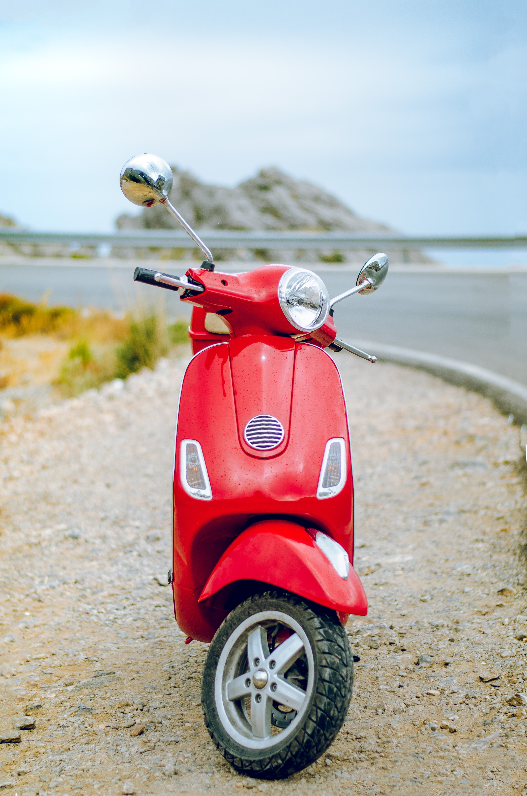

스쿠터

스쿠터는 근거리 이동에 적합한 바이크로 자동차의 경차와 비슷하다. 125cc 이하 소형 모델이 주류를 이루며, 리터당 30~40km에 이르는 고연비로 경제성이 뛰어나 출퇴근을 비롯, 도심에서 일상적으로 부담 없이 사용할 수 있다. 스쿠터 중에는 500cc가 넘는 대형 모델도 있지만, 배기량에 상관없이 모두 자동기어를 사용하는 것이 특징이다. 오른쪽 손잡이(스로틀 그립)를 비틀면 앞으로 가는 것 외에 나머지 운전방법은 자전거와 다를 바 없다. 기본적으로 헬멧이나 크지 않은 가방 하나 정도를 넣을 수 있는 수납공간이 있으며, 여성 라이더가 스커트를 입고도 편하게 탈 만큼 다리 쪽 공간이 평평하다. 다리 쪽에 비교적 큰 짐을 실을 수 있기 때문에 다목적으로 사용하기 좋다. 넘어뜨리더라도 크게 파손되는 부분이 없어 누구나 탈 수 있고 유지보수 비용이 저렴하여 가장 많은 라이더들이 애용하는 바이크다.